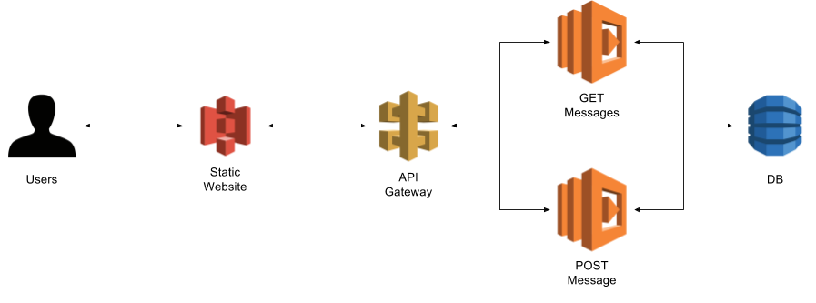
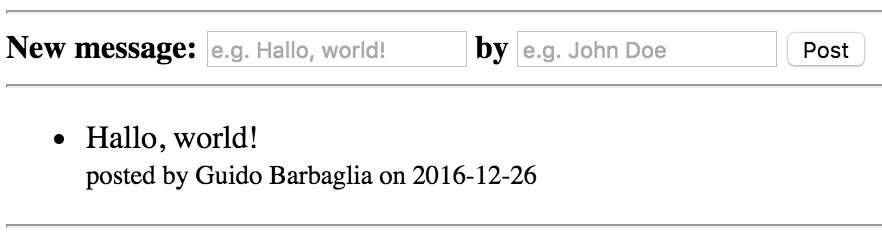

Create a full-stack serverless web-app with a single file
Serverless is one of the biggest buzzwords of these years, and the implementation of solutions based on such architecture has been boosted by the release of AWS Lambda. This post describes a little experiment I conducted to learn more about this technology. I wanted to define and deploy a fully functional web-app (both back-end and front-end) based on RESTful services with one single file.
The web-app itself is a very simple guestbook, that allows users to post short messages and read what other users previously posted. The app consists of a simple HTML client with some JQuery in it, and two Python RESTful services used to retrieve and create messages. This simple architecture is shown in the picture below.

Through the use of AWS CloudFormation it is possible to configure, create, deploy and orchestrate all these resources with a single file. The source code of the Serverless Guestbook experiment is available on GitHub at this link.
What is serverless anyway?
According to Martin Fowler:
Serverless can [...] mean applications where some amount of server-side logic is still written by the application developer but unlike traditional architectures is run in stateless compute containers that are event-triggered, ephemeral (may only last for one invocation), and fully managed by a 3rd party.
In the Serverless Guestbook experiment, the entire source code of the server-side logic is defined in the configuration file. I don't know anything about the deployment and management of my Lambda functions, which are stateless and event triggered. What is more, I don't know any details of the management and deployment of any of the components of my architecture: the DB, the gateway, and so forth.
Let's start!
Data Storage
The first piece of the system is the data storage. I only need one table to store the guestbook messages. I will then define a new DynamoDB resource in my CloudFormation file as follows:
DB:
Type: "AWS::DynamoDB::Table"
Properties:
TableName: Messages
AttributeDefinitions:
- AttributeName: MessageID
AttributeType: S
KeySchema:
- AttributeName: MessageID
KeyType: HASH
ProvisionedThroughput:
ReadCapacityUnits: 5
WriteCapacityUnits: 5
DynamoDB is schema-less, I only need to define the name of the table (Messages), and a single attribute that will be used as the primary key (MessageID). We will store more information in the DB, but AWS doesn't need to know about it.
Front-end
S3 web-site hosting
The front-end has only one element, a simple HTML page with some JavaScript code embedded into it. S3 is a simple storage service that can be easilly configured to serve static content. The bucket can be created as follows:
S3Bucket:
Type: "AWS::S3::Bucket"
Properties:
BucketName: serverless-guestbook
AccessControl: PublicRead
WebsiteConfiguration:
IndexDocument: index.html
I will use a policy to configure the S3 to serve our static page:
S3BucketPolicy:
Type: "AWS::S3::BucketPolicy"
Properties:
Bucket: !Ref S3Bucket
PolicyDocument:
Statement:
- Sid: PublicReadForGetBucketObjects
Effect: Allow
Principal: "*"
Resource:
- "arn:aws:s3:::serverless-guestbook/*"
Action:
- "s3:GetObject"
HTML and JavaScript
The HTML page defines a simple form and a list of messages retrieved from the DB. The source code is available here and the UI is shown below.

Populate the Bucket
I defined an S3 bucket capable to serve static content. I also have an HTML
client for my services. How do I link the two, in the same file? I can I
populate the bucket after its creation with the HTML client? The easiest thing
is to use the putObject method of the AWS NodeJS SDK.
Such method takes a string (the whole source code of the front-end in this case)
and creates a file in the given bucket. At this point I need something to
execute this source code, therefore I need to define a Lambda function, as
describe at
line 31
of the CloudFormation file.
Trigger the Lambda
I have a Lambda function capable to put the HTML code in the S3 bucket. But this is just the description of a function, I need something to trigger such function. To achieve such goal, it is possible to define a CustomResource, which:
enable you to write custom provisioning logic in templates that AWS CloudFormation runs anytime you create, update (if you changed the custom resource), or delete stacks
Basically, after the CloudFormation stack has been created, AWS triggers the custom resource, which is linked to the Lambda. Its definition is very simple:
CustomResourcePopulateS3:
Type: "Custom::PopulateS3"
Version: 1.0
Properties:
ServiceToken: !GetAtt [ LambdaPopulateS3, Arn ]
Please note that the custom resource needs to receive a response from the Lambda function that has been triggered. AWS provides a JavaScript library for the NodeJS SDK. Such library must be imported in the Lambda function:
var response = require('cfn-response');
And then it is invoked at the end of the Lambda function to send a response to the custom resource:
s3.putObject(params, function(err, data) {
if (err) response.send(event, context, response.FAILURE, data)
else response.send(event, context, response.SUCCESS, data)
})
The CustomResource mechanism is summarized in the image below:
Back-end
Create and Retrieve Data
The business logic of the whole application is composed by two RESTful services: a GET request to fetch all the messages from th DB, and a POST call to create a new message. I can define a Lambda function for each service, and each function will use the AWS SDK to query the DynamoDB table. I have previously used the NodeJS SDK to populate the S3 bucket to take advantage of the cfn-response library, but I will favour the Python SDK to communicate with the DB. The GET function retrieves and sort all the messages in the table:
LambdaGet:
Type: "AWS::Lambda::Function"
Properties:
FunctionName: GetMessages
Handler: index.handler
Role: !GetAtt [ LambdaFunctionRole, Arn ]
Runtime: python2.7
Code:
ZipFile: >
import boto3
def handler(event, context):
messages = []
db_client = boto3.client('dynamodb')
items = db_client.scan(TableName='Messages', Select='ALL_ATTRIBUTES')['Items']
for item in items:
messages.append({
'message': item['Message']['S'],
'author': item['Author']['S'],
'date': item['Date']['S']
})
return sorted(messages, key=lambda msg: msg['date'], reverse=True)
On the other hand, the POST function reads the message and the author from the front-end, generates the ID and the date, and stores the new message in the DB:
LambdaPost:
Type: "AWS::Lambda::Function"
Properties:
FunctionName: PostMessage
Handler: index.handler
Role: !GetAtt [ LambdaFunctionRole, Arn ]
Runtime: python2.7
Code:
ZipFile: >
import boto3, datetime, uuid
def handler(event, context):
db_client = boto3.client('dynamodb')
response = db_client.put_item(
TableName = 'Messages',
Item = {
'MessageID': { 'S': uuid.uuid1().urn },
'Message': { 'S': event['message'] },
'Author': { 'S': event['author'] },
'Date': { 'S': datetime.datetime.utcnow().isoformat() }
}
)
return response
API
The Lambda functions are ready to be executed, by I need to expose them as API to be able to use them from the front-end. This part is a bit verbose, because I need to define several resources. I need an API Account to be able to use CloudWatch logs. Then I need to define an API Gateway, a gateway role to grant permissions to my API, and finally a deploy and a stage. For each Lambda function I also need to define a method. For example, the GET method is defined as follows:
GetMessagesREST:
Type: "AWS::ApiGateway::Method"
Properties:
AuthorizationType: NONE
HttpMethod: GET
Integration:
Credentials: !GetAtt [ APIGatewayRole, Arn ]
IntegrationHttpMethod: POST
IntegrationResponses:
- StatusCode: 200
ResponseParameters:
method.response.header.Access-Control-Allow-Headers: "'Content-Type,X-Amz-Date,Authorization,X-Api-Key,X-Amz-Security-Token'"
method.response.header.Access-Control-Allow-Methods: "'GET,OPTIONS'"
method.response.header.Access-Control-Allow-Origin: "'*'"
Type: AWS
PassthroughBehavior: WHEN_NO_MATCH
Uri:
!Join
- ""
-
- "arn:aws:apigateway:ap-southeast-2:lambda:path/2015-03-31/functions/"
- !GetAtt [ LambdaGet, Arn ]
- "/invocations"
MethodResponses:
- StatusCode: 200
ResponseParameters:
method.response.header.Access-Control-Allow-Headers: false
method.response.header.Access-Control-Allow-Methods: false
method.response.header.Access-Control-Allow-Origin: false
ResourceId: !GetAtt [ APIGateway, "RootResourceId" ]
RestApiId: !Ref APIGateway
This type of resource defines the HTTP method, the inputs, the outputs, the integration with the Lambda function and the headers of each REST service. Such headers are very important to define CORS filters and be able to consume such services from the front-end. To summarize, we need the following resources:
- API Gateway Account
- API Gateway REST API
- API Gateway Deployment
- API Gateway Stage
- API Gateway Method (one for each endpoint)
Conclusions
Well, I made it! I was able to define, deploy and orchestrate an entire fully functional web-app based on RESTful service with a single file!
First of all I have created a schemaless DB with a single table. Then I defined an S3 bucket to host my static content, and a Lambda function (triggered by a custom resource) to populate such bucket when the stack is created. Defining the whole front-end client inline inside a Lambda function was a bit of a stretch of course, but I wanted to put everything in ONE file! After that I had to configure the whole environment for my API: an account, a deployment, a stage and an endpoint for each service. Finally, I implemented two different Lambda functions capable to query the DB.
The whole experiment was quite interesting, and the final result is not too bad. I expected the Lambda functions to be slow (especially after long periods of non-usage of the service), but I have experienced a better response time compared to Heroku's Dynos. The development process is quite long and painful, because the only way to test the stack is to deploy it and try the various components, especially their interactions. The CustomResource is particularly fragile, and any error in the usage of the cfn-response library will lead to a huge waste of time.
On the other hand, this could be an interesting way to prototype simple apps and experiment with different technologies and setups. For example, I have used two different SDK's (NodeJS and Python) for two different use cases in the same project. What is more, you don't have to worry about any ops settings, because AWS will manage almost everyting for you!